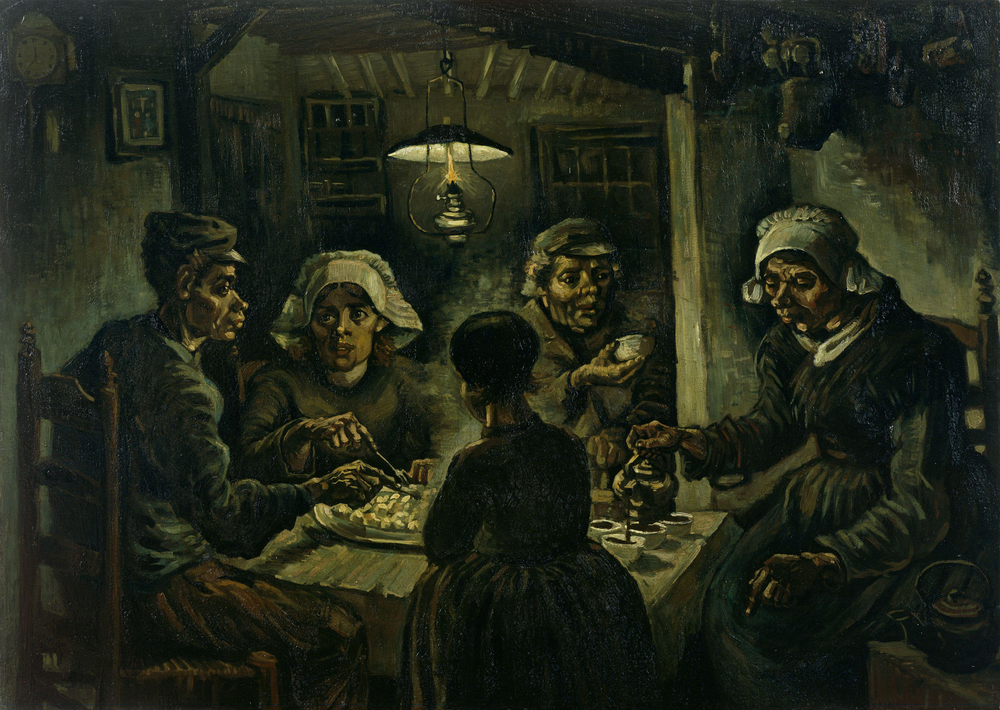

A Noite Estrelada
"A Noite Estrelada" é uma das pinturas mais reconhecíveis de Van Gogh, caracterizada por um céu turbulento e cheio de estrelas girando sobre uma pequena vila. Criada durante o período em que Van Gogh estava internado em um hospital psiquiátrico, esta obra reflete a sua profunda emoção e a conexão com o cosmos.
Autorretrato com a Orelha Cortada
Esta pintura mostra Van Gogh com o rosto enfaixado após cortar parte de sua própria orelha durante um episódio de desequilíbrio mental. Este auto-retrato é uma das representações mais conhecidas da turbulência emocional e física que Van Gogh enfrentou ao longo de sua vida.
Doze Girassóis numa Jarra
"Doze Girassóis numa Jarra" é uma série de pinturas do artista Vincent van Gogh, criada entre 1888 e 1889. Nesta série, Van Gogh retrata doze girassóis em um vaso, explorando cores vibrantes e técnicas expressivas para capturar a beleza e vitalidade dessas flores. As pinturas são consideradas ícones da arte moderna e destacam a habilidade de Van Gogh em transmitir emoções intensas através de sua arte.
Os Comedores de Batata
O quadro retrata uma cena simples de trabalhadores rurais, especificamente três camponeses sentados à mesa comendo batatas. A obra é conhecida por sua representação realista da vida dos trabalhadores e pela forma como van Gogh captura a textura e a atmosfera da cena através de pinceladas densas e cores sombrias.
Quarto em Arles
"Quarto em Arles" é uma série de três pinturas do renomado artista holandês Vincent van Gogh, criadas entre 1888 e 1889. As obras retratam o quarto onde van Gogh viveu em Arles, no sul da França. O artista pintou o quarto em diferentes momentos, cada versão com suas próprias nuances e variações de cor. As pinturas são conhecidas por sua representação sincera e íntima do espaço pessoal de van Gogh, refletindo sua busca por um refúgio tranquilo e familiar.
-


-

- 